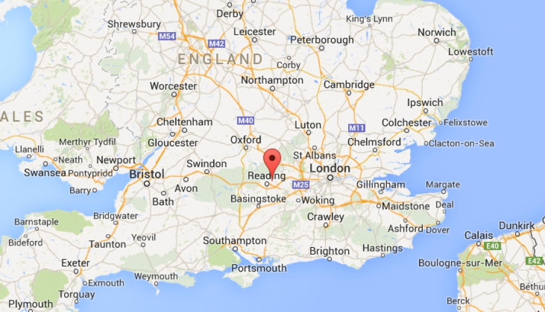

Reading
Reading (/ˈrɛdɪŋ/) is a market town and borough in Berkshire, England. Located in the Thames Valley at the confluence of the rivers Thames and Kennet. Reading is 64 km east of Swindon, 39 km south of Oxford, 64 km west of London and 26 km north of Basingstoke.
Reading is a major commercial centre, especially for information technology and insurance. It is also a regional retail centre, serving a large area of the Thames Valley with its shopping centres, including the Oracle, the Broad Street Mall, and the pedestrianised area around Broad Street. It is home to the University of Reading. Every year it hosts the Reading Festival, one of England's biggest music festivals. Reading has a professional association football team, Reading F.C., and participates in many other sports.